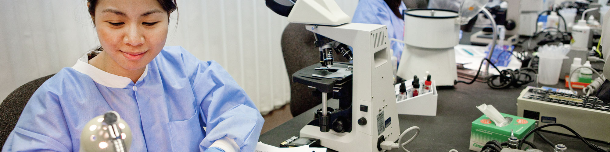
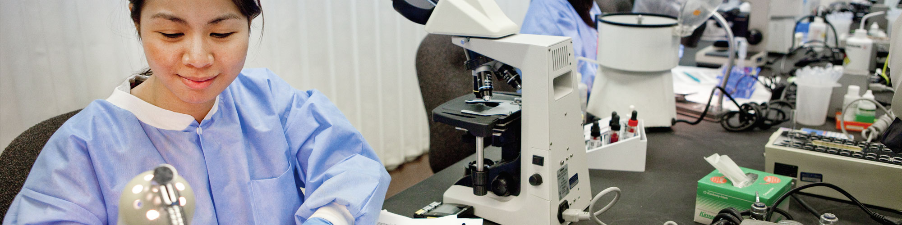
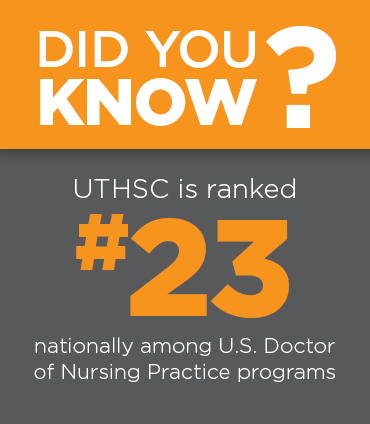

Bringing the benefits of the health sciences to the citizens of Tennessee and beyond through education, research, clinical care and public service.

Academics
Since 1911, we have been training health care professionals through education, research, clinical care and public service. Today, our Colleges of Dentistry, Graduate Health Sciences, Health Professions , Medicine, Nursing and Pharmacy serve more than 3,000 students and 1,300 residents, post docs and fellows across four campuses.
Learn More... 

Research
UTHSC has a long and rich tradition of accomplishments in basic, clinical and translational research in a wide variety of disciplines focused on the health issues that impact our community, our region, the state of Tennessee and the world.
Learn More...Clinical Care
Our faculty and students provide health care to the community through our network of hospitals, practice groups, specialty care clinics, and mobile health care facilities.
Learn More...
Public Service
Public service is central to our mission. Every year, thousands of faculty, staff and volunteers across four campuses located in Memphis, Knoxville, Chattanooga and Nashville provide clinical care, health education and preventive care programs to the people of Tennessee.
Learn More...

UTHSC News


UTHSC Now


Last Published: ...